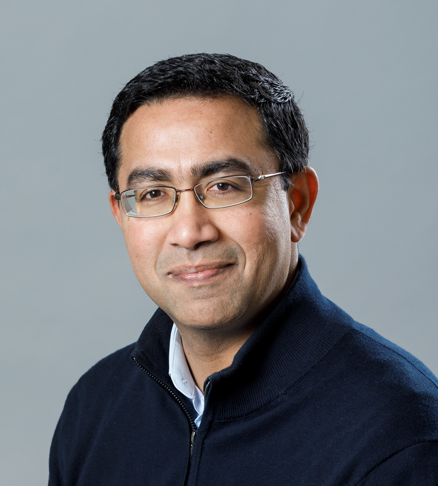
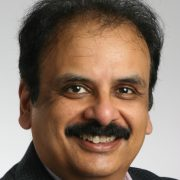
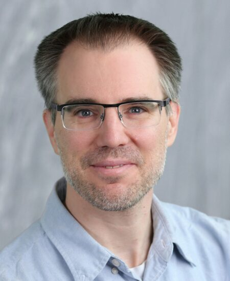
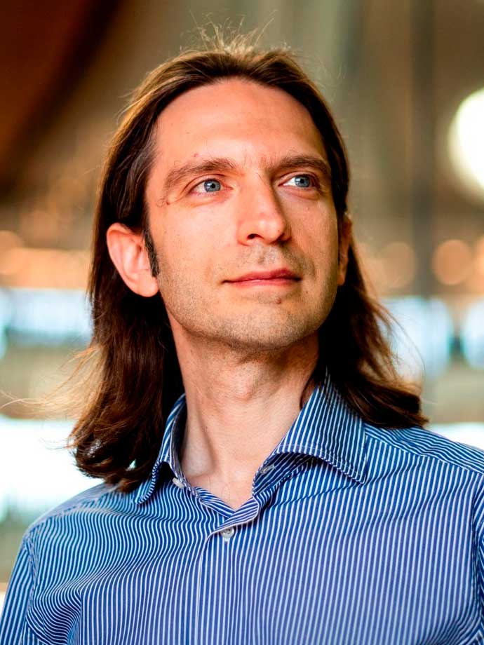
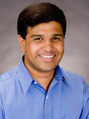

The workshop will take place on {{ site.data.conference.dates }}, co-located with ACM MobiCom 2026 in Austin, Texas, USA.
Location: Texas Union, 3rd Level, Santa Rita Room 3.502 — Map
| 8:30–8:40 AM | Welcome and Opening Remarks |
| 8:40–9:40 AM | 20th Anniversary Panel: 20 Years of Wireless Experimentation |
| 9:40–10:40 AM | Session 1: Open RAN and AI-RAN Systems |
| 10:40–11:00 AM | Coffee Break |
| 11:00–11:15 AM |
🏆 Test-of-Time Talk — Erik Luther
|
| 11:15 AM–12:15 PM | Session 2: Wireless Network Measurement and Analytics |
| 12:15–1:30 PM | Lunch + Demo Session |
| 1:30–2:30 PM | Special 20th Anniversary Keynote — Mahesh Marina |
| 2:30–3:30 PM | Session 3: Wireless PHY Prototyping, CSI, and Localization |
| 3:30–4:00 PM | Coffee Break |
| 4:00–5:00 PM | Session 4: Experimental 5G Platforms and Emerging Services |
| 5:00–5:10 PM | Closing Remarks |

Mahesh K. Marina
Professor
University of Edinburgh

Victor Bahl
Technical Fellow & CTO
Microsoft Research

Joerg Widmer
Research Director
IMDEA Networks Institute

Dimitrios Koutsonikolas
Professor
Northeastern University

Sudharman Jayaweera
Program Director
NSF
A Framework for Experimental Dense vRAN Deployments Romain Beurdouche, Raymond Knopp (EURECOM) SlotScope: Slot-Aligned Multi-Layer Observability for CPU-Resident AI-RAN Workload Assessment Ali K. Abbas, Azuka Chiejina, Vijay K. Shah (North Carolina State University) Bringing dApps to OCUDU: An E3 Controller for Real-Time Open RAN Intelligence Angelo Feraudo, Ravis Shirkhani, Stefano Maxenti, Andrea Lacava, Michele Polese, Tommaso Melodia (Northeastern University) Performance Characterization of dApps in Open Radio Access Networks Conrado Boeira, Eduardo Baena, Andrea Lacava, Tommaso Melodia, Dimitrios Koutsonikolas (Northeastern University); Israat Haque (Dalhousie University) |
Speaker: Erik Luther
srsLTE: An Open-Source Platform for LTE Evolution and Experimentation (WiNTECH 2016)
Ismael Gomez-Miguelez, Andres Garcia-Saavedra, Paul D. Sutton, Pablo Serrano, Cristina Cano, Douglas J. Leith
App-Based Performance Characterization of Cellular and Wi-Fi Networks in Dense Stadium Deployments Hardani Ismu Nabil (Sebelas Maret University); Muhammad I. Rochman, S.M. Haider Ali Shuvo, Joshua Roy Palathinkal, Monisha Ghosh (University of Notre Dame) Three Phones, Nine Afternoons: An Experience Report on Multi-Operator 5G Walk-Testing in Manhattan Wonyul Choi (Academy for Mathematics, Science & Engineering); Ahan Kak (Nokia Bell Labs) Private 5G vs. Wi-Fi in the Enterprise: A Measurement Study of Tunability and QoE Moinak Ghoshal, Dimitrios Koutsonikolas (Northeastern University); Shivang Aggarwal, Mohamed Ibrahim, Puneet Sharma (HPE Labs); K. K. Ramakrishnan (University of California, Riverside) MINT: Modeling GenAI Impact on Network Traffic Andrew Nguyen, Samson Kempiak, Koushik Kar, Ish Kumar Jain (RPI); Agrim Gupta (Samsung Research America) |
Demo: A Dense vRAN Deployment to Challenge Computing Romain Beurdouche, Raymond Knopp (EURECOM) Demo: A Flexible, Declarative Framework for Deploying and Reproducing 6G Experiments Ziyad Mabrouk, Damien Saucez, Mohammadbagher Tavassoli Kejani (Inria); Tariro Mukute (University of Cape Town) Demo: Enabling Interoperability of dApps over Heterogeneous Radio Access Networks Andrea Lacava, Angelo Feraudo, Michele Polese, Tommaso Melodia (Northeastern University) Demo: cuSat as the DVB-S2X Backhaul of a 5G RAN Maxime Elkael, Michele Polese, Tommaso Melodia (Northeastern University) Demo: Beam-O-RAN: A Closed-Loop 5G O-RAN Testbed for mmWave Beam Management Andrew Nguyen, Hung Xuan Ngo, Ish Kumar Jain (RPI); Derek Ladd, Narendran Srinivasan, Srinivas Shakkottai (Texas A&M University); Arun Paidimarri, Alberto Valdes-Garcia (IBM Research) |
Mahesh K. Marina, University of Edinburgh
Title: Two Decades of Experimental Wireless Research: A Retrospective
Abstract: As ACM WiNTECH celebrates its 20th anniversary, this keynote reflects on my personal journey in experimental wireless research spanning over two decades, beginning with the experiences that led to the creation of WiNTECH in 2006. Along the way, I will revisit a series of research efforts and testbeds, including rural community wireless networks, programmable cellular networks, cloud-native mobile networking, and Open RAN-based 5G testbeds. Beyond highlighting key research contributions, I will share lessons learned along the way and offer perspectives on the future of experimental wireless research.
Bio: Mahesh Marina is a Professor (Personal Chair of Networked Systems) in the School of Informatics at the University of Edinburgh. His research interests span networked systems, with a particular focus on wireless and mobile networking, experimental networked systems, and AI-driven networking. He has held visiting professor and researcher positions at Johns Hopkins University, ETH Zurich, and Ofcom (the UK’s telecoms regulator). Previously, he was a Turing Fellow at the Alan Turing Institute (the UK’s national institute for data science and AI) for five years (2018–23) and served as Director of the Institute for Computing Systems Architecture at the University of Edinburgh for four years (2018–22). Prior to joining Edinburgh, he spent two years as a postdoctoral researcher in the UCLA Computer Science Department after earning his PhD in Computer Science from the State University of New York at Stony Brook. He is a Fellow of the IEEE, Fellow of the Royal Society of Edinburgh, and an ACM Distinguished Member.
BE-CSI: Unlocking 320 MHz CSI on Commodity Wi-Fi 7 Devices Stefano Fontana, Francesco Gringoli (University of Brescia & CNIT); Jakob Link, Matthias Hollick (TU Darmstadt); Francesca Meneghello, Francesco Restuccia (Northeastern University) BRISC: A Dataset of Channel Measurements at 5 GHz With a Reconfigurable Intelligent Surface Mattia Piana, Anna Valeria Guglielmi, Stefano Tomasin (University of Padova); Giovanni Angelo Alghisi, Giovanni Perin, Francesco Gringoli (University of Brescia & CNIT) BCMSDR: Breaking the Cost Barrier of High-Rate SDRs Using Commercial Wi-Fi Hardware Jakob Link, Matthias Hollick (TU Darmstadt); Stefano Fontana, Denis Festa, Francesco Gringoli (University of Brescia & CNIT) Enabling Passive Localization with a Single Moving Receiver through Periodic 5G Reference Signals Marco Tricco, Samuele Zanini, Giuseppe Bianchi, Nicola Blefari-Melazzi, Stefania Bartoletti (University of Rome Tor Vergata) |
Opening the Black Box: Zero-Touch Conformance and Security Testing of Commercial O-RUs Linqi Xiao, Abhishek Bhattacharyya, Moojan Kamalzadeh, Venkateswarlu Gudepu, Larry J. Horner, Andrea Fumagalli (University of Texas at Dallas) cuSat: An Open GPU-Based DVB-S2X Feeder Link for Cellular-Satellite Convergence Maxime Elkael, Michele Polese, Tommaso Melodia (Northeastern University) Scripting Traffic, Aligning Power: A 5G Testbed Integrating gNB Activity and Commercial UE Power Haochen Wang, Aaron Tartz, Adel Heidari, Agrim Gupta, Dinesh Bharadia (UC San Diego); Kotturi Sai Prasanth, Radha Krishna Ganti (IIT Madras) 5G Multicast-Broadcast On Air: An Open SDR Testbed and Experimental Characterization of MBS Rajendra Paudyal, Al Nahian Bin Emran, Rajendra Upadhyay, Duminda Wijesekera (George Mason University); Arupjyoti Bhuyan (Idaho National Laboratories) |